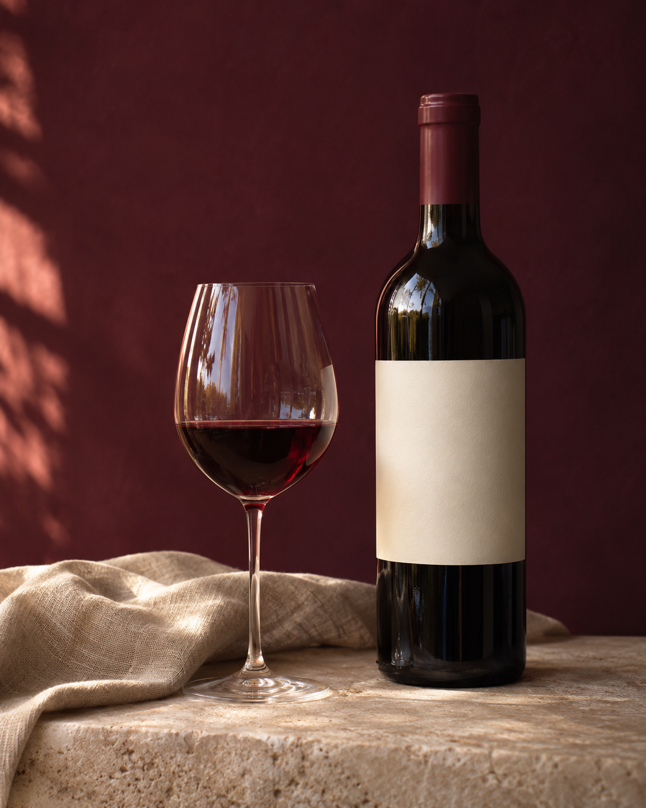

Pauillac, Bordeaux
ChâteauMouton
Rothschild
2020라벨에 담긴 이야기
피터 도이그가 그린 2020년 라벨.
그해의 와인과 함께 남는 또 하나의 이야기.
홍콩 와인 컨시어지 서비스 준비 중
프랑스 프리미엄 와인을 홍콩에서 구매·보관하고,
예약한 날 현지에서 찾는 컨시어지를 준비합니다.
구매 경험을 듣는 리서치입니다. 현재 주문은 받지 않습니다.

이렇게 준비하고 있습니다
생산자와 빈티지,
구매 가능한 조건을 살핍니다.
구매 지원과 첫 12개월 보관을
묶은 유료 서비스를 준비합니다.
이후 보관료 별도 · 상세 요금 준비 중
가능 여부를 확인해 예약을 확정하고,
홍콩의 단일 창구에서 수령합니다.
현재는 리서치 단계입니다. 실제 이용 조건과 요금은 확정 후 안내합니다.
프랑스 와인, 당신의 다음 선택
특별한 날을 위해 골라두고 싶은 한 병.
당신이라면 어떤 생산자와 빈티지를 고르시겠어요?
Pauillac, Bordeaux
피터 도이그가 그린 2020년 라벨.
그해의 와인과 함께 남는 또 하나의 이야기.
Margaux, Bordeaux
Decanter 자료에서 99/100으로 평가한 빈티지.
당신은 한 병을 고를 때 무엇을 참고하나요?
Margaux, Bordeaux
같은 생산자라도, 찾게 되는 연도는 다릅니다.
당신이 다시 만나고 싶은 빈티지를 들려주세요.
리서치를 위한 빈티지 예시입니다. 판매 상품이나 보유 재고를 뜻하지 않습니다.
홍콩 단일 창구에서 사전 예약해 수령하는 방식입니다. 월·금 11~16시, 전일 18시까지 접수 후 가능 여부를 확인해 예약을 확정하는 안을 검토하고 있습니다(홍콩 시각). 운영 가능일은 확정 뒤 안내합니다.
수수료에 구매 지원과 첫 12개월 보관을 포함하는 방향으로 준비합니다. 이후 보관료는 별도이며, 상세 요금은 아직 정해지지 않았습니다.
당시 시세를 참고해 환매 조건을 상담하는 방향도 검토합니다. 환매 가능 여부·가격·수수료·정산 조건은 개별 협의합니다.
한국 배송은 제공하지 않습니다. 홍콩 현지에서 예약 수령하는 서비스로 준비하고 있습니다.
당신의 경험을 듣습니다
찾는 와인을 어디서 구하는지, 보관할 때 무엇이 불편했는지.
홍콩 구매·보관이 필요한 순간이 있는지 들려주세요.
답변을 바탕으로 먼저 다룰 와인과 보관·수령 방식을 검토합니다.
참여 확인과 7개 질문 · Google Forms
기존 구매 방법으로 충분했던 경험도 들려주세요.